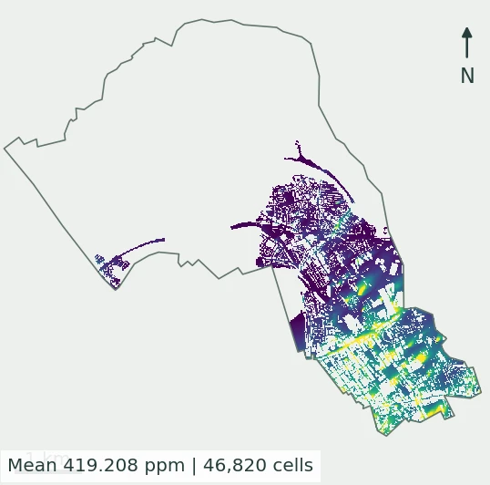
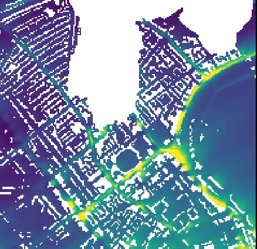

3D U-Net-FiLM for PM₂.₅ prediction
Paper: 10.1016/j.envsoft.2026.107247 · Source code on GitHub
Explore the modelling results from the AI4URBAN project.

Camden CO₂ video, modelling and comparison results.

Xiamen NO₂ video and Camden PM₂.₅ modelling results.
AI4URBAN software at Imperial College London
Explore the project's research software on the Imperial College London website.
Paper: 10.1016/j.envsoft.2026.107247 · Source code on GitHub